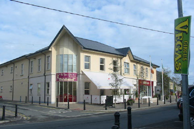
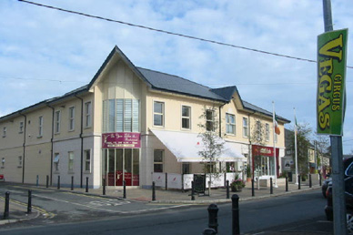

Ratoath Community Centre
Welcome to the Venue Theathre!
We are delighted to extend to you an invitation to view the Venue Theatre.
The Venue Theatre opened its doors to the public in
2006, and each year successfully entertains thousands of people from County Meath, County Dublin and from all over Ireland and the World.
The theatre presents dance and music, as well as the best of local and national professional and amateur companies. Our vibrant programme also includes puppetry, multimedia, clowning and comedy. Get onto our mailing list and feast your senses on the great choice of affordable entertainment at The Venue Theatre!
Mary Gauthier

In conversation and in public, Mary Gauthier comes off as a practical, no-nonsense woman. Stoic, even. Which wouldn't seem unusual, except for the fact that her songs carry so much emotional punch, they can leave you staggering. She has a way of burrowing into that hole so many of us carry inside our souls, and emerging with universal truths that show we aren't so alone after all.
Buy tickets!
The Ultimate Michael Buble Tribute Show
Frankly Buble & The Fever Big Band take you through a fantastic
nostalgic musical journey over the last decade charting Michael Buble's
meteoric rise to fame.
The show features hits from Michael Buble and all the musical legends, Frank Sinatra,
Dean Martin , Bobby Darin, Stevie Wonder, The Beatles and many, many more that helped
shape his global career.
Buy tickets!
David Kitt
David Kitt will perform solo in The Venue Theatre, Rataoth this coming May 31st previewing new material along with stripped-down versions of songs from his extensive back catalogue.
David Kitt is an Irish musician/producer that crosses multiple genres.
Buy tickets!
Stage Performers variety show
Come and join us on the 21st and 22nd June at 7.30pm, when Stage Performers host their End of Year Variety Show 2013. Children from 3years to 15years will sing, dance and perform songs of old and songs from our current charts. They will also do a sketch from the ever popular film "Willy Wonka".
Buy tickets!